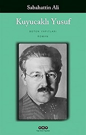
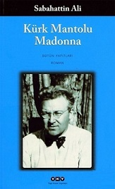

Merhaba.Ben Betül Bircan.25 yaşındayım.İstanbulda yaşıyorum.Anadolu Üniversitesi Yönetim Bilişim Sistemleri Bölüminden mezunum.Kitap okumaktan ve müzik dinlemekten hoşlanırım.Web Geliştirme üzerine ilgi duymaktayım.Bunun için de Kodluyoruz dan Parika.Dev üzerinden Front-End eğitimi alıyorum.Eğitim boyunca harika bilgiler öğrendim ve öğrenmeye de devam ediyorum.Bu alanda kendini geliştirmek isteyen herkese de tavsiye ediyorum.
Suç ve Ceza(Fyodor Dostoyevski)
Suç ve Ceza, edebiyat dünyasında başarıyı ve ölümsüzlüğü ön sıralarda göğüsleyen bir romandır. Dostoyevski’nin yıllara meydan okuyan, hayranlık ve merak uyandıran keskin dehası romanı tepeden tırnağa kuşatmıştır. Dahi yazar, Suç ve Ceza’da okuyucularına bir kez daha insana has çatışmaları kusursuz bir gerçeklikle sunmuştur. Neyin suç ya da neyin ceza olduğunu belirleyen nedir? Onları birbirinden ne ayırır? Toplumdaki değişken karşılığının yanı sıra insanın vicdanında nasıl karşılık bulur? Kendi sorularını doğuran bu çok derin ve katmanlı romanda, Dostoyevski’nin eşsiz gözlem gücü ve büyüleyici betimleme yeteneği okuyucuya rehberlik eder. Böylece Suç ve Ceza da sadece okunan değil, tanık olunan bir derin maceraya dönüşür.
Şeker Portakalı(José Mauro De Vasconcelos)
Acı dolu bir hayat sürdürmek ve bunu yaşamın olağan seyri gibi kabul etmek, ta ki hayattaki en gerçek ve karşı konulamaz acının ne olduğunu öğrenene kadar… Şeker Portakalı; yoksulluk ve sevgisizlik içinde yaşayan küçük Zeze’nin dünyasını, okuyucusuna yalnızca minik bir çocuğun gözünden değil, evrensel bir hakikat penceresinden sunuyor. Brezilyalı yazar Jose Mauro de Vasconcelos’un 1968’de yayımlanan Şeker Portakalı adlı eseri, yalın anlatımı ve çarpıcı hikâyesiyle dünya edebiyatının unutulmaz başyapıtları arasında yer alıyor. Yazarının hayatından izler taşıyan eser, bir çocuğun iç dünyasından yola çıkarak tüm insanlığa acıyla yoğrularak olgunlaşmanın ağırlığını duyumsatıyor.
Simru(Kahraman Tazeoğlu)
Nereden çıktın yine karşıma?Tamamlayamadığın hangi vicdansızlığın için döndün? Geçmişim olamamıştın, şimdi geleceğimde olmak için mi geldin? Artık benim için sen bir “fark etmez”sin. Fırtınada kaybolmuş bir yelkenli için rüzgârın nereden estiği önemli değildir. Geçti artık o günler… Mezarıma çiçekle gelmen, beni öldürmüş olman gerçeğini değiştirmiyor.Sessiz çığlıkları vardır kırılan kalbimizin ve onları yalnızca Allah duyar. Senin duymadığın ve hiçbir zaman duyamayacaklarından bahsediyorum. Umarım beni anlıyorsundur. Keşke biraz düşünebilseydin. Düşünmediğin için şimdi kalbin acıyor biliyor musun? Beynin düşünemediği her şeyin cezasını kalp çeker. Düşünmek beyni acıtmaz ama düşünmemek kalbi yorar.Şu hayatın bize en büyük darbesi beklediklerimizin hiçbir zaman gelmemesi, gelenlerin ise bizi hak etmemesidir. Bazı insanlar hiç başlamayan hayatlarının bitmesinden korkarlar… Neyi biriktirebilmişler ki kaybetsinler? Sen de onlardansın bana göre. Elinde avucunda hiçbir şey kalmamış ama hâlâ yitirmekten korkuyorsun. Kolların boşluğa alışmış ama benimle doldurmaya çalışıyorsun. Bitmişsin ama hiç başlamamış olduğunu anlayamamışsın. Söylenmiş sözleri duymamışsın, şimdi söylenmemişleri dinliyorsun. Göremediğin şey şuydu: Ben sana hayatımı verdim, sen onu başkasının çöpüne attın.Bana gelince… İyiyim ben. Aşkta özgürlüğün tutsaklıkla başladığını ve aynı zamanda da hayatta aşktan daha önemli şeyler olduğunu öğrendim. Mesela insan olmak…
Kuyucaklı Yusuf(Sabahattin Ali)

İlk Basımı 1937 yılında “Yeni Kitapçı” tarafından basılan roman, Sabahattin Ali’nin roman türünde ilk eseridir.YKY tarafından ilk olarak 1999 yılında basılan roman günümüzde YKY (Yapı Kredi Yayınları) tarafından basılmaya devam edilmektedir. Kitabın editörlüğü Ayfer Tunç, yeni kapak tasarımı ise “Nahide Dikel” tarafından yapılmıştır.Kuyucaklı Yusuf konusu itibariyle ailesinin katledilmesiyle sahipsiz kalan dokuz yaşındaki Yusuf’un olayı soruşturmak için Kuyucak’a gelen Nazilli Kaymakamı Selahattin Bey tarafından evlatlık alınması ve çocuğun daha sonraki hayatı anlatılmaktadır. Edebiyat eleştirmenlerine göre Yusuf karakteri, köyden şehre göç edip şehir hayatına uyum sağlayamayan insan tipinin habercisi olarak değerlendirilmektedir.
Kürk Mantolu Madonna(Sabahattin Ali)

Hüzünlü bir aşk öyküsü olan Kürk Mantolu Madonna, iki hikayeden oluşan bir anlatıma sahip. İlk hikayede Rasim adlı karakterin iş bulması ve Raif Efendi ile tanışması anlatılıyor. Kimseler ile konuşmayan sessiz sakin Raif Efendi’yi gözlemleyen ve onu daha yakından tanımak isteyen Rasim’in anlatımı ile Raif Efendi’yi dinliyoruz. Onun neden bu kadar yalnız ve topluma yabancı olduğunu ise kendisinin kaleme aldığı siyah kaplı defter aracılığı ile ikinci hikayede öğreniyoruz. İkinci hikaye Raif Efendi’nin kimselere söylemediği ve anlatmadığı bir aşk hikayesi ile başlıyor. Gençlik yıllarına gittiğimiz bu defterde Raif Efendi’nin Almanya’da bir resim sergisinde Maria Puder ile tanışması ve sonrasında birbirlerine aşık olmasının hikayesi içinde bir anda kendimizi buluyoruz.